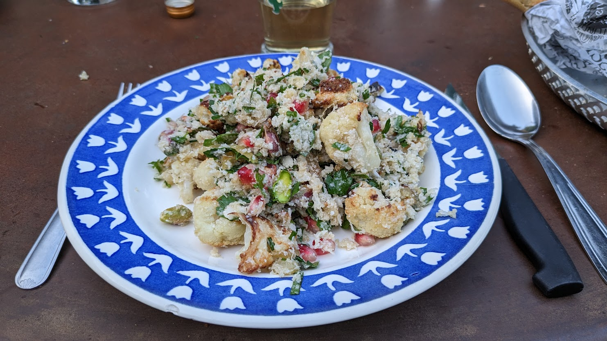

Salade de chou-fleur, pistaches et grenade

Pour 3-4 personnes :
- Un gros chou-fleur
- Un oignon
- 80mL d'huile d'olive
- Un bouquet de persil
- Une poignée de feuilles de menthe
- Quelques branches d'estragon
- Une demi-grenade
- 40g de pistaches décortiquées
- Une cuillère à soupe de cumin moulu
- Un citron
- Sel
- Éplucher et couper l'oignon en lamelles. Râper environ un tiers du chou-fleur.
- Préchauffer le four à 200°C en chaleur tournante. Couper le reste du chou-fleur en fleurons, les mélanger dans un gros bol avec l'oignon, 30mL d'huile d'olive et un peu de sel. Disposer le tout sur une plaque de four, et enfourner 20 minutes, jusqu'à ce que ça soit bien doré.
- Pendant ce temps, laver et émincer les herbes grossièrement, récupérer les graines de la grenade, et presser le citron.
- Laisser refroidir le chou-fleur une fois sorti du four, puis le mélanger avec tout le reste.